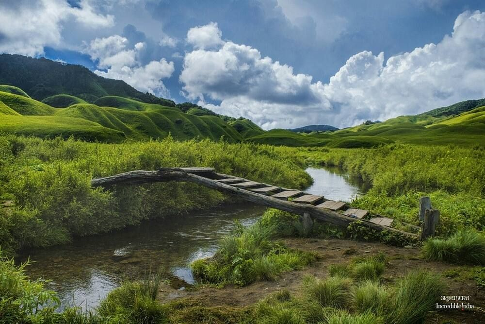

Dzukou Valley is a hidden paradise located on the border of Nagaland and Manipur. This valley is famous for its seasonal flowers, especially the Dzukou Lily that blooms in June and July, carpeting the entire valley in white and pink.
The valley remains shrouded in mist for much of the year, creating a mystical atmosphere. It's perfect for trekking enthusiasts and nature lovers who want to experience the pristine beauty of Northeast India.
- Dzukou Lily blooms (June-July)
- Rolling hills covered with wildflowers
- Trekking trails through scenic landscapes
- Camping under starry skies
- Sunrise and sunset views over the valley
June to September for flowers, or October to November for clear skies and pleasant weather. Winter (December-February) can be very cold with possible snowfall.
The trek to Dzukou Valley starts from either Viswema village (Nagaland side) or Zakhama (Manipur side). Kohima, the capital of Nagaland, is the nearest major town and is well connected by road. The trek takes about 3-4 hours.